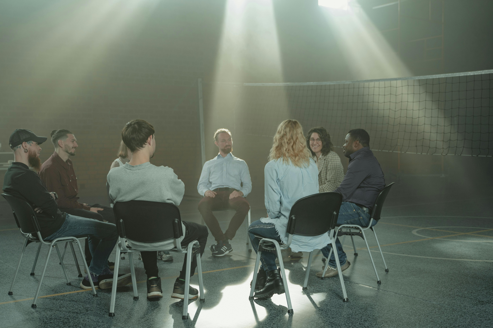

Our Solutions

Kelas Sharing (KERING) merupakan kegiatan berbentuk kelas yang terdiri atas beberapa peserta, dimana peserta dapat mengutarakan kendala yang sedang dialami kemudian akan ditanggapi dan diberikan feedback oleh konselor

Kelas Offline (KOFFE) merupakan kegiatan konsultasi offline yang dilakukan secara private sehingga konsultasi antara peserta dengan konselor dapat berlangsung lebih intens